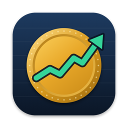
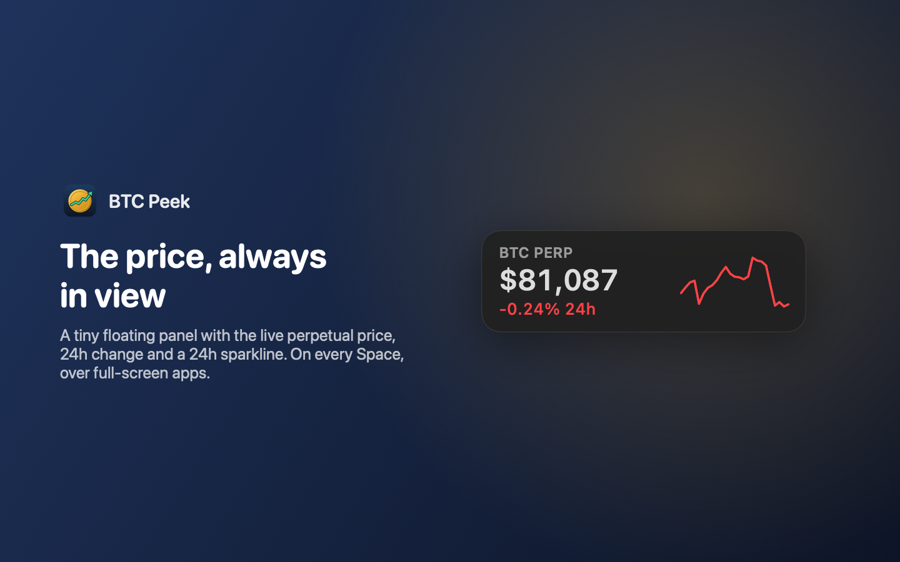
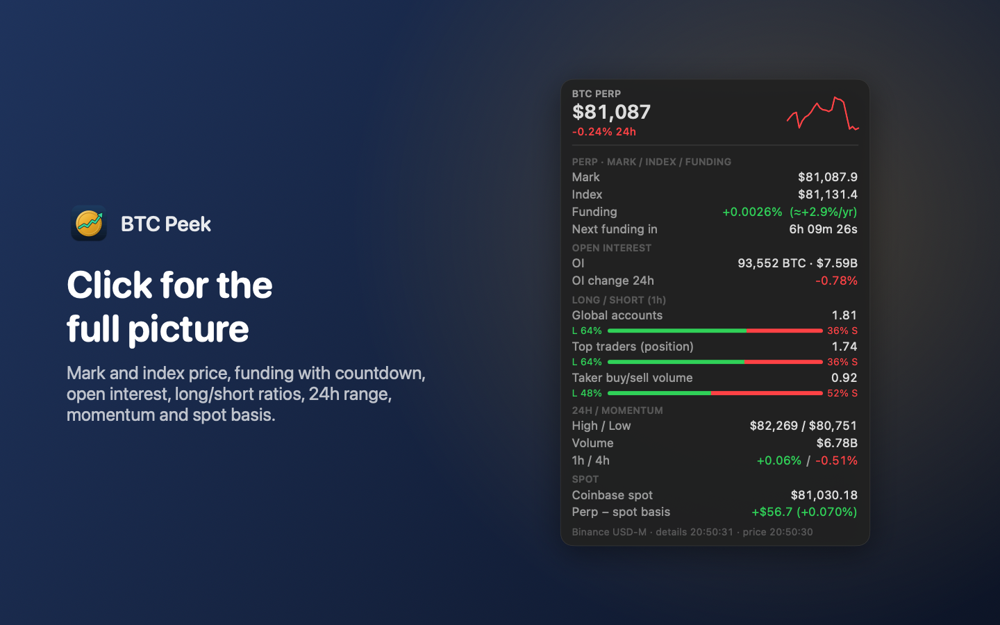

BTC Peek
A tiny always-on-top panel with the live BTC perpetual-futures price, 24h change and a 24-hour sparkline. It floats on every Space and over full-screen apps. The app has a Dock icon, an App Menu, and a Menu Bar Extra that shows the live price. You can turn on Launch at Login from the App Menu, the Menu Bar Extra, or the panel's context menu.

Click the panel for mark and index price, funding with a countdown, open interest, long/short ratios, 24h range, momentum and the perp-spot basis.

Menus and shortcuts
The App Menu includes About, Refresh Now (⌘R), Launch at Login, Hide, and Quit (⌘Q). The View menu shortcuts are:
- ⌘D — Show or hide details
- ⌘E — Show or hide Market read (when details are open)
- ⌘0 — Show the price panel
The Menu Bar Extra shows the live BTC price. Click it for Refresh Now, Show/Hide Details, Show Price Panel, Launch at Login and Quit. You can also right-click (or Control-click) the panel for the same actions.
Market read
Open the details panel, then choose View > Show Market Read or press ⌘E (you can also click the Market read row). Market read is a short, rules-based summary of the data already on the panel: a trend lean, a few key points, and price levels to watch. It runs entirely on your Mac: no AI, and no extra network calls. It is descriptive context only, and is not financial advice.
Requires macOS 13 Ventura or later. Questions? See Support.